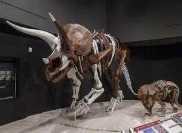

Triceratops is a genus of herbivorous ceratopsid dinosaur that first appeared during the late Maastrichtian stage of the late Cretaceous period, about 68 million years ago (mya) in what is now North America. It is one of the last known non-avian dinosaur genera, and became extinct in the Cretaceous-Paleogene extinction event 66 million years ago. The term Triceratops, which literally means "three-horned face", is derived from Ancient Greek.
It has been documented by numerous remains collected since the genus was first described in 1889, including at least one complete individual skeleton. Paleontologist John Scannella observed: "It is hard to walk out into the Hell Creek Formation and not stumble upon a Triceratops weathering out of a hillside." Forty-seven complete or partial skulls were discovered in just that area from 2000 to 2010. Specimens representing life stages from hatchling to adult have been found.[6] As the archetypal ceratopsid, Triceratops is one of the most popular dinosaurs, and has been featured in film, postal stamps, and many other types of media.
So what is the wee beastie anyway?

Bearing a large bony frill and three horns on its large four-legged body, and possessing similarities with the modern rhinoceros, Triceratops is one of the most recognizable of all dinosaurs and the best known ceratopsid. It shared the landscape with and was probably preyed upon by Tyrannosaurus, though it is less certain that the two did battle in the manner often depicted in traditional museum displays and popular images.
The functions of the frills and three distinctive facial horns on its head have long inspired debate. Traditionally, these have been viewed as defensive weapons against predators. More recent theories, noting the presence of blood vessels in the skull bones of ceratopsids, find it more probable that these features were primarily used in identification, courtship and dominance displays, much like the antlers and horns of modern reindeer, mountain goats, or rhinoceros beetles.
The theory would find additional support if Torosaurus were found to be the mature form of Triceratops, as this would mean the frill also developed holes (fenestrae) as individuals reached maturity, rendering the structure more useful for display than defense.
Who are the Trikes?
Individual Triceratops are estimated to have reached about 7.9 to 9.0 m (25.9-29.5 ft) in length, 2.9 to 3.0 m (9.5 to 9.8 ft) in height, and 6.1-12.0 tonnes (13,000-26,000 lb) in weight. The most distinctive feature is their large skull, among the largest of all land animals. The largest known skull (specimen MWC 7584, formerly BYU 12183) is estimated to have been 2.5 metres (8.2 ft) in length when complete, and could reach almost a third of the length of the entire animal.
A specimen of T. horridus named Kelsey measured 7.3 metres (24 ft) long with a 1.98 metres (6.5 ft) skull, stood about 2.3 metres (7.5 ft) tall, and was estimated by the Black Hills institute to weight nearly 6 tonnes (5.9 long tons; 6.6 short tons).
A Triceratops 8 metres (26 ft) long has been estimated by Gregory S. Paul to have massed 9.3 tonnes (9.2 long tons; 10.3 short tons). It bore a single horn on the snout, above the nostrils, and a pair of horns approximately 1 m (3.3 ft) long, with one above each eye. In 2010, paleontologists revealed a fossil (named "Yoshi's Trike," MOR 3027) with 115-centimetre-long (3.77 ft) horn cores, housed and displayed at the Museum of the Rockies in Montana. To the rear of the skull was a relatively short, bony frill, adorned with epoccipitals (a distinctive bone found lining the frills of ceratopsians in some specimens - they have nothing to do with the creatures occiptal muscles. )
Most other ceratopsids had large fenestrae in their frills, while those of Triceratops were noticeably solid. T. horridus can be distinguished from T. prorsus by having a shallower snout.
Sources:
All technical information from Wikipedia, with small clarifications by Blackmore where apropos.